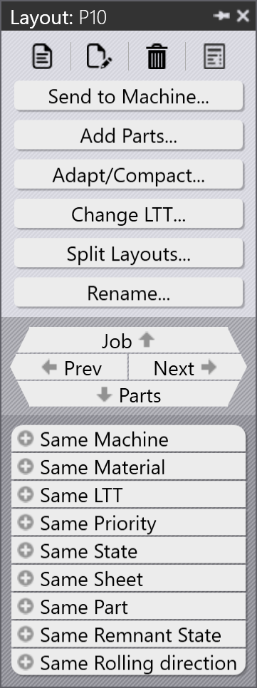

Layout panel
The Layout panel provides tools for managing and optimizing the layout of parts on sheets for cutting operations. It includes features for nesting, arranging, and optimizing part layouts to minimize material waste and improve cutting efficiency.

Send to machine
The "Send to machine" button allows you to send the current layout’s NC directly to the connected cutting machine for processing. This feature streamlines the workflow by eliminating the need for manual file transfers and ensuring that the machine receives the most up-to-date layout information.
Add parts
The "Add parts" button opens a dialog that lets you select and add parts to the current layout. You can choose from existing parts from library or import new parts to be included in the layout. This feature is useful for quickly updating layouts with additional parts without having to recreate the entire layout from scratch.
Adapt/Compact
The "Adapt/Compact" button provides options to optimize the layout by adapting the arrangement of parts to fit better within the available sheet area. This can include compacting the layout to reduce gaps between parts, rotating parts for better fit, and rearranging parts to minimize material waste. The Adapt/Compact feature helps improve material utilization and can lead to cost savings in cutting operations.
Change LTT
The "Change LTT" button allows you to change the Laser Technology Table (LTT) associated with the current layout. The LTT defines the cutting parameters for the laser cutter, including speed, power, and other settings. By changing the LTT, you can optimize the cutting process for different materials or cutting requirements. This feature is essential for ensuring that the cutting operation is performed with the appropriate settings for the specific parts and materials being used.
Split layout
The "Split layout" button enables you to divide a large layout into smaller, more manageable sections. This is particularly useful when dealing with layouts that exceed the size limitations of the cutting machine or when you want to optimize the cutting process by breaking down complex layouts into simpler parts. The Split layout feature allows you to specify the criteria for splitting the layout, such as by size or part grouping, and generates separate layouts accordingly.
Rename
The "Rename" button allows you to change the name of the current layout. This is useful for organizing and identifying layouts, especially when working with multiple layouts in a project.